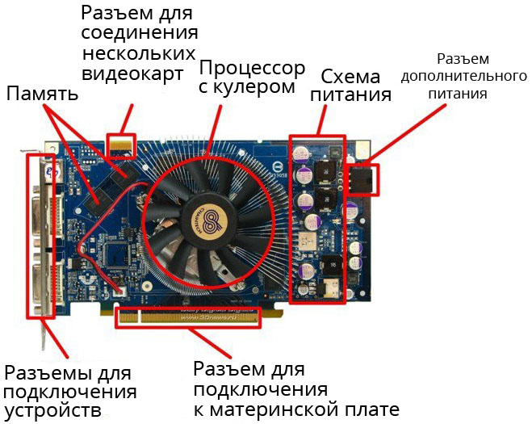

Видеокарта
- Это устройство, преобразующее графический образ, хранящийся как содержимое памяти компьютера (или самого адаптера), в форму, пригодную для дальнейшего вывода на экран монитора.
Память видеокарты (видеопамять)
- Память видеокарты нужна для хранения изображений, команд и промежуточных не видимых на экране элементов необходимо определенное количество памяти. Поэтому в каждом графическом адаптере присутствует постоянный объем памяти. Она бывает разных типов, отличающихся по своей скорости работы и частоте.
Разъем для соединения нескольких видеокарт
- Специальный разъем,который позволяет соеденить несколько видеокарт
Графический процессор с кулером
- От данного компонента зависит быстродействие и мощность всего устройства. В его функциональность входит обработка команд, связанных с графикой. Графический процессор берет на себя выполнение определенных действий, за счет чего снижается нагрузка на ЦП, освобождая его ресурсы для других целей. Чем современнее видеокарта, тем мощность установленного в ней GPU больше, она может превосходить даже центральный процессор благодаря наличию множества вычислительных блоков.
- Как известно, процессор и графическая карта являются самыми горячими комплектующими компьютера, поэтому для них необходимо охлаждение. Если в случае с ЦП кулер устанавливается отдельно, то в большинство видеокарт вмонтирован радиатор и несколько вентиляторов, что позволяет сохранить относительно низкую температуру при сильных нагрузках.
Разъем дополнительного питания
- Разъем для подключения дополнительного питания видеокарты.
Разъемы для подключения устройств
- Современные графические карты оснащены преимущественно по одному разъему HDMI, DVI и Display Port. Данные выводы являются самыми прогрессивными, быстрыми и стабильными.
Разъем для подключения к материнской плате
- Разъем для подключения к материнской плате.